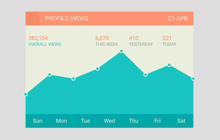
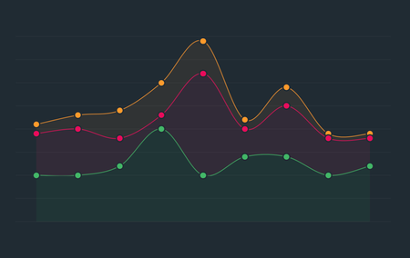
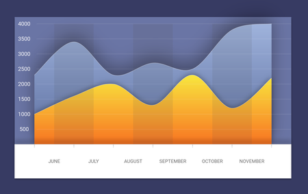
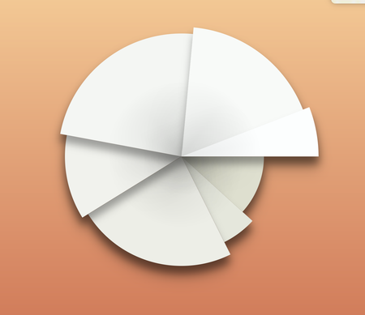

Charting

Setting it up
To include Fuse.Charting in our project, we'll begin by installing the necessary dependencies.
Open up a command line shell (Terminal on macOS, cmd on Windows) and run the following command:
uno install Fuse.Charting
Then, we need to add a package reference to Fuse.Charting in our .unoproj.
It should look something like the following.
{
"Packages": [
"Fuse",
"FuseJS",
"Fuse.Charting"
],
"Includes": [
"*"
]
}
To use charting in your UX you'll need to import the namespace.
You can do this at the top of each UX file as part of your App tag or ux:Class declaration.
<Panel ux:Class="MyChart" xmlns:c="Fuse.Charting">
The xmlns:c="Fuse.Charting" declares c to refer to the charting API, allowing for example c:Plot and c:PlotBar.
Note, this namespace is valid only for this one file. You'll need to add the same declaration to each file you wish to use the charting API.
The examples here will assume the use of c as a prefix.
The basics
Plot creates visual charts from a data source. The API is a series of components that are used to build the chart.
A Plot requires these two key components to produce a minimal chart:
DataSeriesto define the dataPlotDatato enumerate the data points
Following is a minimal example of a bar chart.
<App xmlns:c="Fuse.Charting">
<JavaScript>
var Observable = require("FuseJS/Observable");
exports.data = Observable({ y: 4 }, { y: 1 }, { y: 2 });
</JavaScript>
<c:Plot>
<c:DataSeries Data="{data}" />
<c:PlotData>
<c:PlotBar Color="#000" />
</c:PlotData>
</c:Plot>
</App>
DataSeries
DataSeries define the data for a Plot. At least one DataSeries is required for every Plot.
<c:Plot>
<c:DataSeries Data="{data}">
Where data is an Observable containing the data expressed as a list of objects. For data with multiple dimensions the x, y, z, and w properties can be used. For the simplest data sets only the value property is needed.
valuemaps to theyproperty, if defined, and vice versa. Setting bothyandvalueto different values may produce unexpected results. For instance,{x:0, y:1}is the same as{x:0, value:1}.
A label property can also be added to the items. This is primarily for 1-dimensional data sets using value. This label can then be used by PlotAxis when creating the axis markings.
Multiple DataSeries

You can use multiple DataSeries in one Plot. It's helpful to give them names for later reference:
<c:DataSeries Data="{dataA}" ux:Name="seriesA"/>
<c:DataSeries Data="{dataB}" ux:Name="seriesB"/>
<c:DataSeries Data="{dataC}" ux:Name="seriesC"/>
The Plot will calculate its ranges based on the values in all of its DataSeries. Each series still has its own data, but the calculated values are relative to the combination of all the sets.
PlotData
PlotData is how the plot data is enumerated for displaying in the chart. This is used in combination with a layout helper to plot the actual data.
<Curve StrokeWidth="5" StrokeColor="#008">
<c:PlotData>
<c:PlotCurvePoint/>
</c:PlotData>
</Curve>
The above use of PlotData creates the points for a Curve.
<Panel>
<c:PlotData>
<c:PlotBar>
<Rectangle Color="#0808" Height="80%" Alignment="VerticalCenter"/>
</c:PlotBar>
</c:PlotData>
</Panel>
Here we create rectangles for each data entry.
The layout helpers are:
PlotBarIs a panel that covers the entire area where the bar should be drawn.PlotPointIs a zero-sized panel that is anchored at a single data pointPlotCurvePointCreates aCurvePointmatching the data point
{Plot data.*}
Within a PlotData the {Plot data.*} expression can be used to access several variables about each data point:
rel(per-axis) are values relative to the range (Minimum(0) - Maximum(1))screenRel(per-axis) values relative to the rendering on the screen (Y adjusted and Orientation adjusted)x,y,z,ware Size values, with Unit.Percent. Based onscreenRelsource(per-axis) the data point values from the source (not range adjusted)weight(per-axis) the value of this point divided by the sum of all valuescumulative(per-axis) sum of value up to and including this data pointaccumulated(per-axis) sum of value up to but not including this data pointaccumulatedWeight(per-axis) sum of weight up to but not including this data pointcumulativeWeight(per-axis) sum of weight up to and including this data pointobjectthe input object associated with this data pointlabelthe label (if any) of this data point
The "per-axis" values can be accessed as .x, .y, .z, or .w. For example rel.x or source.y
The Metrics
Each axis is calculated according to an AxisMetric specified on the Plot.
The default XAxisMetric is OffsetCount. This means that the X value of the first data item will be 0.5, the second 1.5, and so on. OffsetCount and Count axes use integer steps along the axis for ticks and labels -- by default 1 tick per data point. This axis is also suitable for dynamically stepping to show just a part of the data at one time.
The default for the other axes, including YAxisMetric, is Range. This means the value for Y is taken directly from the input data (the y or value properties). On a Range axis the stepping values for ticks and labels are spread over the range from the minimum to maximum value. 0 is always considered in the range to avoid producing clipped ranges.
The default values are suitable for creating bar charts and line graphs.
Scatter Plot
For a scatter plot you would set XAxisMetric="Range", as you'd like the value to come from the input.
The input should have both x and y values specified.
Stacked or Ranged plots
The y and z values can be used as a range when plotting bars. The y value is the normal value, and z is considered the previous value. You need to set ZMetric="MergeRange" on the Plot in order for this to work. This tells the Plot that these two values are part of the same range. Normalization will happen after considering both the y and z value.
You can then use Style="Range" on a PlotBar to draw a bar that maps to this range.
DataSeries also supports the ability to create automatic ranges. Add a Metric="Add" property to the second, and further, DataSeries. This will then add the y value to the cumulative total, and set z to the previous total. This creates a range of values suitable for creating a stacked bar chart.
GridLayout
A Plot doesn't have any default layout. A common approach is to use a GridLayout to add the labels, ticks, and plot data.
<GridLayout Columns="50,10,1*" Rows="1*,10,20"/>
This is a basic layout that allocates 50 points for the Y-axis labels, 20 points for the X-axis labels, 10 points for both X/Y tick marks, and the rest for the plot.
Be aware that you can't have
autoin both theColumnsandRowsproperty. This is a sizing mode thatGridLayoutdoes not support. You'll need to use a fixed size for one of the axes, typically the X-labels, as their height is not typically variable.
PlotAxis

PlotAxis create labels on an axis. You must specify the Axis source for the data and provide a Label template that is used for each label.
<c:PlotAxis>
<Text ux:Template="Label" Value="{Plot axis.label}"/>
</c:PlotAxis>
PlotAxishas numerous options for controlling which labels get shown and how they are grouped. Review the API reference for more details.
PlotAxisData
PlotAxisData enumerates the axis information. This is useful for scenarios where neither PlotAxis nor PlotTicks achieve what you want.
This example positions angled labels along the X axis in a GridLayout. (NOTE: This simple example could actually be done using PlotAxis, but it nonetheless demonstrates the concept.)
<Panel Row="2" Column="2" HitTestMode="None">
<c:PlotAxisData Axis="X">
<Panel>
<Text X="{Plot axis.position} * 100%" Y="0" FontSize="18" Color="#000"
Value="{Plot axis.label}" Anchor="105%,45%" TransformOrigin="Anchor" ux:Name="t">
<Rotation Degrees="-60"/>
</Text>
</Panel>
</c:PlotAxisData>
</Panel>
As shown you'll need to position the items yourself when using PlotAxisData, it contains no inherent layout like PlotAxis.
{Plot axis.*}
The {Plot axis.*} data contains variables used to construct an axis:
labelThe label provided by the source datavalueThe range valuepositionThe relative position of this data point along the axis.indexIndex of this data in the source data. This may actually be out-of-range of the source data if using multiple data sets, or options likePlot.DataExtendscreenIndexIndex of the data relative to the window of data shown on the screen (the first data point being 0)
PlotTicks
PlotTicks create tick marks, usually for an axis. This is a Shape, allowing Stroke... properties to be used for drawing the ticks. The ticks that are drawn will line up with the labels of PlotAxis provided they are the same element size (either Width or Height depending on the axis).
<c:PlotTicks Axis="X" AxisLine="0" StrokeWidth="1" StrokeColor="#000"/>
AxisLine indicates a line across the entire access should be drawn at this offset. In this example it's the top of the ticks, making this suitable for the bottom of a chart.
{Plot *}
Within a Plot the {Plot variable} expression can be used to access several useful values from the Plot. These are:
baseline(per-axis) the relative position of the baseline (usually the zero point)hasNextwhetherOffset,Limitcould be increased to reveal more datahasPrevwhetherOffestcould be decreased to reveal more datacountthe number of data points shown on the plotdataMaxline,dataMinline(per-axis) the relative position of the max/min value in the full data set
Radial Charts

The charting API can be used to create pie graphs, spider graphs, and other radial charts. Many of the layout helpers include options to use a radial layout. {Plot*} exposes variables useful in positioning.
For basic charts the input data is the same. The difference is that you work with weights and accumulated values.
The PlotWedge is a convenience element provided to draw elements of a simple pie chart.
<VectorLayer HitTestMode="None">
<c:PlotData>
<c:PlotWedge Color="{Plot data.object}.color" StrokeColor="#488" StrokeWidth="1"/>
</c:PlotData>
</VectorLayer>
In this example we've added a color property to our input data to color each pie wedge differently.
We're using
VectorLayerhere as an optimization for drawing pie wedges. Unlike Rectangles these are a bit slower to draw, as they use the native vector API of the target platform. ThisVectorLayerwill group several vector items together, significantly improving performance.
You can add labels to this chart using c:PlotPoint.
<c:PlotData>
<c:PlotPoint Style="Radial" PointOffset="0.05" Attractor="pieAttract">
<Text Value="{Plot data.label}"/>
</c:PlotPoint>
</c:PlotData>
If you don't wish to use PlotWedge you can calculate the ranges for a plot yourself. This example creates arcs instead of wedges.
<c:PlotData>
<Arc
StartAngleDegrees="{Plot data.accumulatedWeight.y}*360"
EndAngleDegrees="{Plot data.cumulativeWeight.y}*360"
StrokeColor="#488" StrokeWidth="2"/>
</c:PlotData>